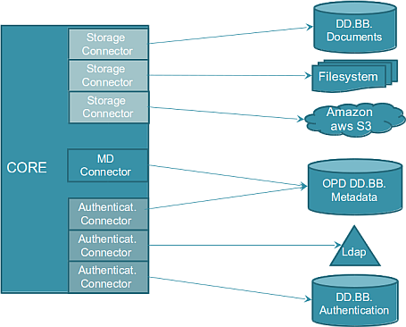

La arquitectura de OpenProdoc de basa en un conector-núcleo que realiza todas las funciones.

Este núcleo puede desplegarse embebido en una aplicación Java estandar (como en el caso del cliente OpenProdoc Pesado eu OpenProdoc Portable). Puede tambien desplegarse en una aplicaciónm J2EE (como es el caso del cliente Web OPD).